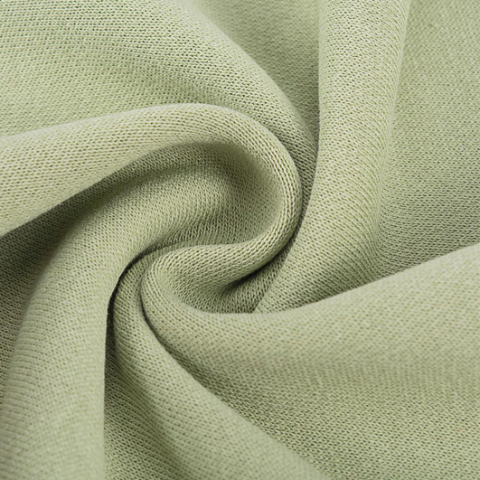
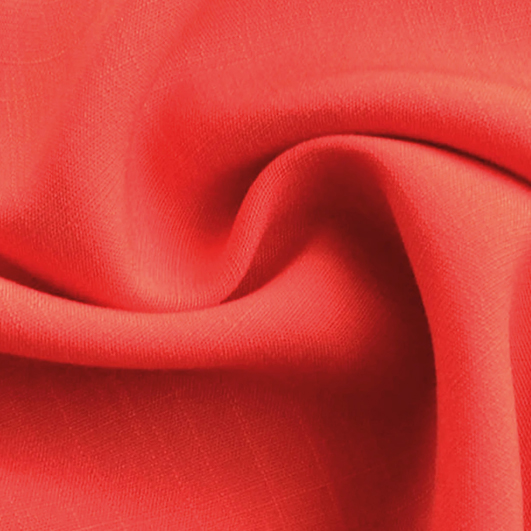
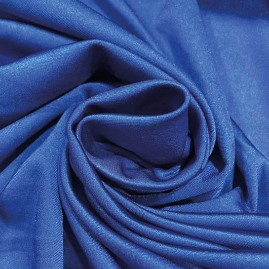

Propiedades y tipos de textiles
Los textiles
Propiedades de los textiles
Las fibras textiles presentan una serie de propiedades fundamentales que determinan su comportamiento, calidad y adecuación a distintos usos. La higroscopicidad es la capacidad de una fibra para absorber o liberar humedad, siendo las naturales como el algodón y la lana más higroscópicas que las sintéticas como el poliéster. La tenacidad se refiere a la resistencia de la fibra a la tracción o al rasgado, y depende tanto de la naturaleza de la fibra como de los tratamientos aplicados durante su procesamiento. La elasticidad es la capacidad de una fibra para recuperar su forma original después de ser estirada, lo que influye en la durabilidad y confort de los tejidos. El cromatismo es la capacidad de las fibras para absorber colorantes, permitiendo la creación de textiles con una amplia gama de colores intensos y duraderos. La densidad indica la cantidad de hilos por unidad de área, mientras que el espesor se refiere al grosor de la tela; ambos factores afectan la ligereza, calidez y resistencia del tejido. La resiliencia es la capacidad de una fibra para recuperar su forma después de haber sido comprimida, lo que es esencial para mantener la apariencia de las prendas. Finalmente, la longitud y la finura de las fibras, medidas en micras, influyen en la suavidad, resistencia y facilidad de hilado, afectando directamente la calidad del producto final.


Tipos de textiles
El mundo textil se basa en las fibras, que son el componente esencial para formar hilos y, posteriormente, tejidos. Estas fibras se clasifican en naturales, artificiales y sintéticas.
Las naturales
provienen directamente de fuentes vegetales, animales o minerales y requieren poco procesamiento, como el algodón, la lana o el lino.
Las artificiales
tienen origen natural pero son transformadas químicamente para mejorar sus propiedades, como el rayón o la seda chardonnet.
Las sintéticas
son creadas completamente en laboratorios a partir de compuestos como plásticos y derivados del petróleo, destacando materiales como el nylon, poliéster o Lycra.